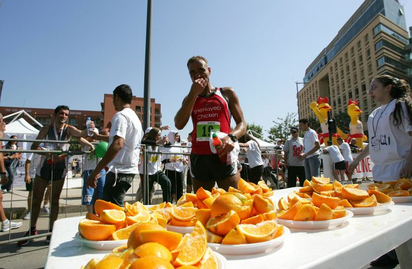
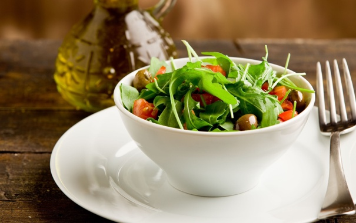

|
Даже питаясь по заветам уважаемых диетологов и регулярно занимаясь спортом, Вы можете допускать множество ошибок, которые часто допускаются любителями здорового образа жизни. На этой странице я предоставлю Вам основные ошибки, которые допускают все любители здорового образа жизни. Заставлять себя любить полезную едуОчень важно, переходя на правильное питание, найти те продукты и сочетания, которые действительно будут вам нравиться. Здоровый образ жизни он на то и образ жизни, что это не краткосрочная диета, а полный пересмотр своих пищевых привычек. Если не нравится гречка, ешьте рис, не любите помидоры, покупайте перец – всегда есть альтернатива и выбор, не стоит зацикливаться на чем-то одном и тем более беспрекословно следовать советам диетологов. В конце концов, жизнь без удовольствия не жизнь, а постоянные ограничения и принуждения лишь приведут к неминуемому срыву. Пить слишком много водыТрадиционные два литра в день – это лишь усредненное количество жидкости, необходимой здоровому человеку. Мы бы даже сказали, что это что-то вроде «средней температуры по больнице»: у одного пациента лихорадка, а у другого зуб на зуб не попадает. В этом случае разобраться, сколько жидкости необходимо именно вам, поможет узнать только обследование у врача и консультация с диетологом. К слову, чрезмерное потребление воды может привести к различным осложнениям в работе организма в целом и мочевыделительной системы в частности. Покупать продукты, основываясь только на их калорийностиЭто неправильно, потому что низкое содержание жира и калорий не всегда гарантирует пользу продуктов. Важно также количество других необходимых для организма питательных веществ. Кроме того, обращайте внимание на состав. Игнорировать стрессВы можете питаться одной гречкой и овощными смузи, но это не поможет вам стать здоровей ни на толику, если в течение дня вы только и делаете, что нервничаете и переживаете по каждому поводу. Лишний вес, бессонница, проблемы с пищеварением – это лишь часть тех заболеваний, которые ожидают излишне нервных людей. Советуем хотя бы раз в неделю заниматься расслабляющей йогой, которая поможет снять напряжение, физическое и нервное. Употреблять поливитамины |
|---|